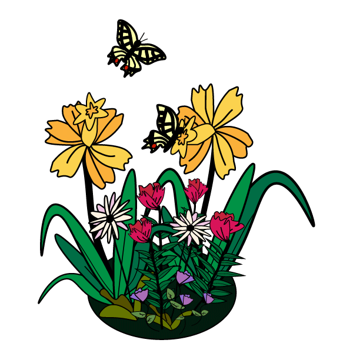

Brynn Lilley - Fall 2020
Art
of
the
Web
Reflecting on my experience as a kid and comparing it to the internet now, it makes me question where the time has gone and how the sudden shift in the advancement of the internet seemed almost unrecognizable. I often shied away from web design, coding, and computer programming because it seemed so different to me than what I had grown up with and I always worried that it was too out of my comfort zone to attempt. To me, the beauty of the early web was the personalization and handcrafted feel. You could almost distinguish the personality of the creator of the site you browsed. All my life I have enjoyed making things by hand and I think my interest in drawing and the fine arts is what made me feel more drawn to the early web, as opposed to the seemingly standardized modern web we have now. While taking this class I have been able to rediscover the different elements that made the early internet so special to me and see how they can be used in modern internet design today.
For many of my projects, I wanted to discover my own personal voice and style, while also trying to reintroduce the elements of the early web that I admired most, such as the personalization and hand craftedness. My first project, Hello World, I hand drew flowers that had personal meaning in my life and stitched them together in the form of a gif. I wanted to represent myself in a way that did not directly depict me as a person, but instead represented my life in a more visual way, similar to the way I saw the early web. The Coding from Life Activity 1 and Activity 2 was another visual of flowers, however it was made through coding, as opposed to the flowers that I had hand drawn. I chose the flowers from the still life to be able to compare the ability to translate the element of being handcrafted through code, as well as directly drawn by hand. In the Hovering Activity and CSS Animation Activity, I explored the exposure of typography and how few words could be used to tell a narrative when paired with other elements such as animations or images. For my second project, 2020 Series, I similarly used the idea of pairing typography and images in order to reveal my identity without directly showing images of myself. I wanted to be able to communicate just how well you can know a person simply through their data and online usage. I then stumbled upon many interesting sites when completing the Navigation Activity, with some being focused on illustration and storytelling. This partially inspired my Fan Page where I explored using hand drawn elements to mimic the feeling on an online, interactive, children’s story book. I wanted to capture the memories of drinking tea when I was little and learning how to read during tea time. I also wanted to refer back to the early web when content was more heavily reading based. Moving into the Typography Activity 1 and Activity 2, I focused more on making the content readable and standardised as it was an article that would be read by many of various backgrounds and needed a more accessible design. This was useful when designing the final project, the Helpful App, where I combined what I had learned from all of the previous activities and projects. I aimed to make an app that replicated the idea of the early web when things felt more personal and customized, thus using knowledge and inspiration from my previous work and discussions. Using a simple type style allowed the app to encourage users to customize it. This app was a representation of realizing the ability to translate the personal feel of the early web into a modern design. In my final activities, the Media Queries Activity and jQuery Activity 1 and Activity 2, I explored shapes and colors and how these would translate into different meanings depending on the other elements used on the site.
With all of the projects and activities that I have worked on this semester, I have become more familiar with the way in which the internet has evolved and how the many skills I have developed can be implemented into creating unique and individualized web designs, similar to those I enjoyed growing up. There is always going to be advancements in the internet and things are constantly changing, however I am content with knowing that internet art and hand crafted sites are still very alive today in many aspects if you know where, and how, to look. I have enjoyed reading the many perspectives and discussions about the web from its beginning until now, and I can confidently say I have a much better understanding of the tools, such as the computers and smartphones, that I use every single day and I look forward to passing the knowledge I have gained through this course along.